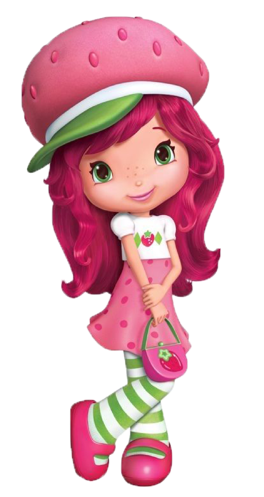
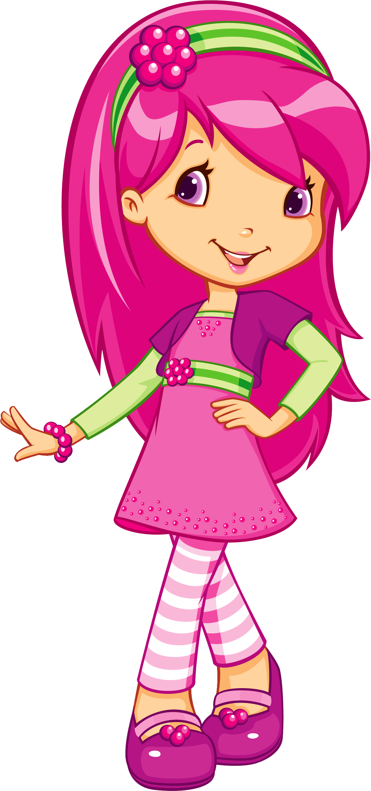

Rosita Fresita
Tu estado mental está en modo optimista. Eres de las personas que incluso cuando las cosas se ponen difíciles busca la manera de endulzar el día.

Frambuesita
Tu estado mental está en modo seguridad y estilo. Eres una persona que cuida los detalles y busca armonía en todo.

Morita
Tu estado mental es reflexivo y sensible. Estás en un momento de observar y entender mejor lo que sientes.

Naranjita
Tu mente está en modo energía social. Te gusta hablar, reír y compartir con otras personas.

Mora Azul
Tu estado mental está en modo reflexión y calma. Te gusta pensar las cosas con cuidado y entender el mundo.